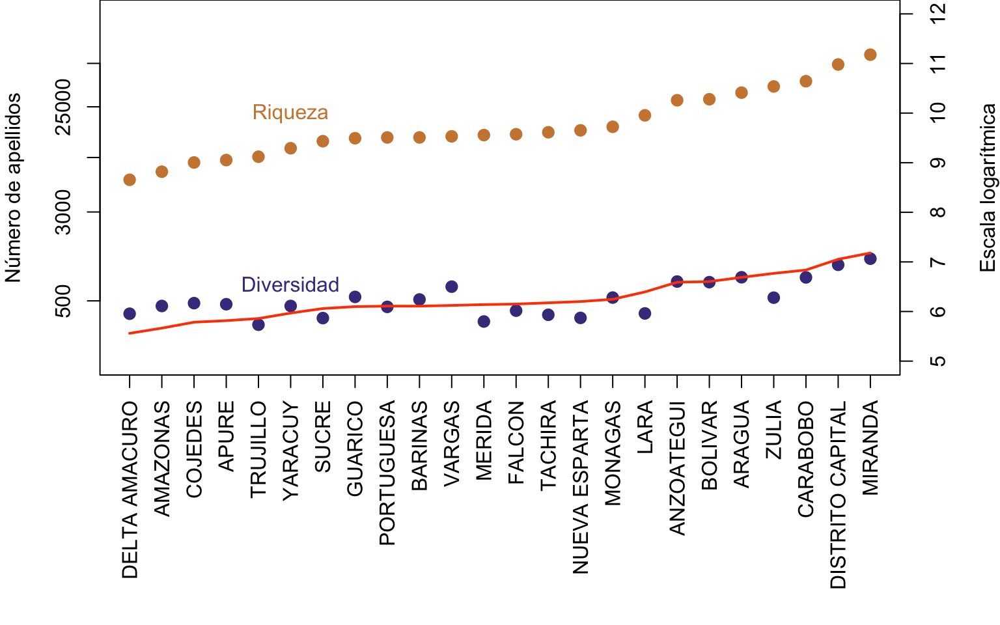
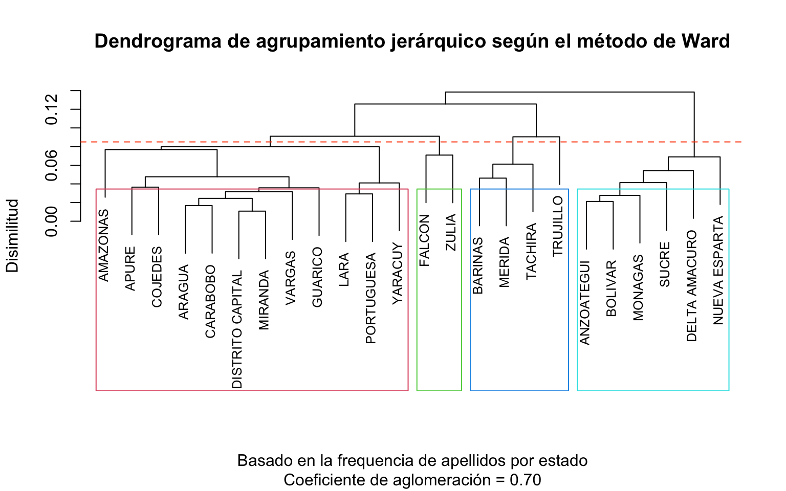

Los nombres personales y apellidos son un fascinante tema, no sólo para obras literarias, sino también para análisis estadísticos muy variados, en las áreas de ciencias sociales, ciencias históricas, medicina y ecología humana.
Los apellidos se heredan según sistemas tradicionales y/o legales, y vienen a ser una medida indirecta de la genealogía, siguiendo (en la mayor parte de los casos) la línea paternal. Por otro lado los nombres son escogidos siguiendo muchas pautas sociales distintas y pueden reflejar tradiciones, idiosincracias o modas temporales.
Existen muchos ejemplos de análisis estadísticos relacionadas con la historia (o futuro) de los nombres, con su distribución geográfica, etc.
En esta serie de análisis voy a ilustrar algunas curiosidades sobre nombres y apellidos venezolanos en general (y zulianos en particular), y mostrar ejemplos de código en R que puede ser útil para visualizar la distribución y frecuencia de nombres en Venezuela.
Los datos
Para estos análisis voy a utilizar los datos del registro electoral de Venezuela del año 2012. La base de datos del registro electoral tiene información muy valiosa, pero también incluye algunos errores de transcripción e inconsistencias que pueden entorpecer los análisis.
Para un primer ejercicio utilizamos una matriz de la frecuencia de aparición de los apellidos por estado. La versión que utilizo ha sido parcialmente depurada para facilitar los análisis, pero no ha sido posible realizar una revisión y validación completa. Estos datos están disponibles en un repositorio público de mi cuenta de github.
La base de datos original contiene datos de más de 20 millones de personas registradas, pero después de descartar algunos datos dudosos o incompletos, la matriz resultante incluye datos de aproximadamente 16.421.396 personas, entre las que hay al menos 192.200 apellidos diferentes.
El estado Delta Amacuro tiene solo 5740 apellidos diferentes con una población registrada de aproximadamente 93.214 votantes, mientras que el estado con mayor riqueza de apellidos es Miranda con 71488 entre 1.719.922 personas registradas.
Para cada estado comparamos esta riqueza (número de apellidos) con la diversidad de Shannon, la cual puede interpretarse como el logaritmo de la riqueza ajustada por la abundancia relativa de cada elemento.
Aquí uso la función diversity del paquete vegan en R.
require(vegan)
Loading required package: vegan
Loading required package: permute
Loading required package: lattice
This is vegan 2.6-4
S <-log(colSums(mtz.ap.vzla>0))H <-diversity(t(mtz.ap.vzla))
Para generar el gráfico utilizo el siguiente bloque de código:
oo <-order(S)par(mar=c(10,4,0,4),las=2)plot(S[oo],axes=F,xlab="",ylab="Número de apellidos",ylim=c(5,12),pch=19,col="peru",cex=1.2)text(6,log(22000),"Riqueza",col="peru")points(H[oo],col="slateblue4",pch=19,cex=1.2)text(6,log(700),"Diversidad",col="slateblue4")lines(1:24,S[oo]*mean(H/S),lwd=2,col="orangered")axis(1,1:length(oo),names(S)[oo])par(las=0)mtext("Escala logarítmica",side=4,line=3)axis(2,log(c(500,3000,9000,25000,60000)),c(500,3000,9000,25000,60000))axis(4)box()

La línea naranja representa la diversidad esperada según el logaritmo de la riqueza, es decir la relación promedio entre riqueza y diversidad.
El patrón observado muestra que los estados con mayor riqueza (De Miranda hasta Mérida) tienden a tener una diversidad menor a la esperada, posiblemente por sobrerepresentación de algunos apellidos dominantes.
Por otro lado, los estados con menor riqueza (de Vargas a Delta Amacuro) tienden a tener una diversidad observada por encima de la esperada. Esto puede deberse a una mayor “equidad” entre los apellidos, o sea que sus frecuencias relativas tienen una distribución más homogénea.
Diferencias regionales
En un segundo paso vamos a comparar la frecuencia de los apellidos entre estados para calcular su similitud en composición.
En primer lugar vamos a seleccionar solamente los apellidos con una frecuencia mayor a 500.
Luego transformamos la matriz resultante de tal forma que todas las columnas sumen a uno. De esta manera todos los estados tienen el mismo peso en el análisis, y se comparan las frecuencias relativas de los apellidos en vez de sus valores absolutos.
m1 <-apply(m0,2,function(x) x/sum(x))
En este caso voy a usar un par de función agnes del paquete cluster para hacer un agrupación jerárquica de los estados. Entre los métodos disponibles escogí el método de Ward.
require(cluster)
Loading required package: cluster
h0 <-agnes(t(m1),method="ward")
Estos resultados se visualizan en un dendrograma, en el cuál se pueden identificar al menos 4 grupos bien definidos.
plot(h0, which.plot =2,xlab="Basado en la frequencia de apellidos por estado",sub=sprintf("Coeficiente de aglomeración = %0.2f",h0$ac),main="Dendrograma de agrupamiento jerárquico según el método de Ward",ylab="Disimilitud",hang=0.4,cex=.8)rect.hclust(h0, k=4, border =2:6)abline(h=0.085,lty=2,col="orangered")

El primer grupo, incluye la mitad de los estados de Venezuela, representantes de los Llanos, la Cordillera de la Costa, y que incluye también un estado de Occidente (Lara) y otro del sur (Amazonas). Luego están los estados Zulia y Falcón formando un grupo aparte. En el tercer grupo están estados andinos (incluyendo Barinas). Finalmente los estados de Oriente y Guayana forman un último bloque.
Más adelante trataré de analizar en más detalle estas diferencias regionales al incluir información espacialmente explícita sobre la distribución de los nombres.
Nombres zulianos
Es notable como algunos apellidos representan de idiosincrácias regionales. En la novela “Sobre la misma tierra” nuestro novelista Rómulo Gallegos representó a una sociedad marabina con raices Wayuu e influencias alemanas, pero con una fuerte identidad regional. Al anti-héroe de la historia lo bautizó con el nombre de Demetrio Montiel, o “Montiel Montiel de los Montieles”, para hacer una singular referencia a su arraigado linaje zuliano.
Mi pregunta es muy sencilla: ¿Es éste el apellido más zuliano que puede haber?
Al igual que en el paso anterior debo hacer algunas modificaciones a la matriz para realizar los análisis: escoger los apellidos con una frecuencia mayor a 500, y calcular la importancia del apellido dentro del estado (re-escalar por el total de las columnas) y la importancia del estado para cada apellido (re-escalar por el total de las filas).
m0 <- mtz.ap.vzla[rowSums(mtz.ap.vzla)>500,]## calcular proporción dentro del estado (dividir entre el total del estado) m1 <-apply(m0,2,function(x) x/sum(x))## calcular proporción entre estados (dividir entre el total del país) m2 <-apply(m0,1,function(x) x/sum(x))
Con estos datos elaboro una tabla con el número de personas con cada apellido en el estado Zulia y en toda Venezuela, y luego la frecuencia del apellido en el Zulia (porcentaje de habitantes con ese apellido), y su representación en el Zulia comparado con el total de Venezuela. Sólo muestro aquí las familias con tienen más de 20% de sus representantes en el estado Zulia, y que suman más de 20.000 personas en el estado (Que me perdonen los Chacín, Portillo, Morán y otros por dejarlos fuera…).
Por lo visto Gallegos debió manejar muy bien el análisis estadístico de los apellidos… En esta selecta lista efectivamente aparece Montiel como un serio candidato al apellido más zuliano. Según el registro electoral de 2012 en Venezuela hay más de 45 mil “Montieles” en edad de votar y más del 85% están registrados en el Zulia.
Pero aún así hay que considerar otras alternativas no menos zulianas. Palmar es un apellido menos frecuente en el país (sólo 25 mil), pero más del 90% de ellos están en el Zulia. Los apellidos Urdaneta y Villalobos son más numerosos en Venezuela y en el Zulia, pero la proporción de ellos registrados en el estado es de “apenas” 79%.
Estos cuatro apellidos pueden considerarse “indicativos” del estado Zulia, pues son mucho más frecuentes aquí que en el resto del país. Lo cual quiere decir que si conoces a alguien con ese apellido, lo más probable es que le gusten las mandocas y escuche gaitas en diciembre.
Sin embargo, si te encuentras en el estado Zulia, es más probable que te encuentres con más González que con cualquier otro de los apellidos zulianos. En el Zulia hay más de 240 mil González (o 1,4 veces más que los Palmar, Montiel, Urdaneta y Villalobos juntos), que representan al menos 26% de los González de Venezuela.
Listo por hoy
Bueno, eso es todo por el día de hoy. En otra ocasión retomaré este tema para dedicarle un par de sesiones más a explorar otros aspectos de la
Para comentarios y sugerencias pueden escribirme a mi cuenta de Twitter @jrfep.